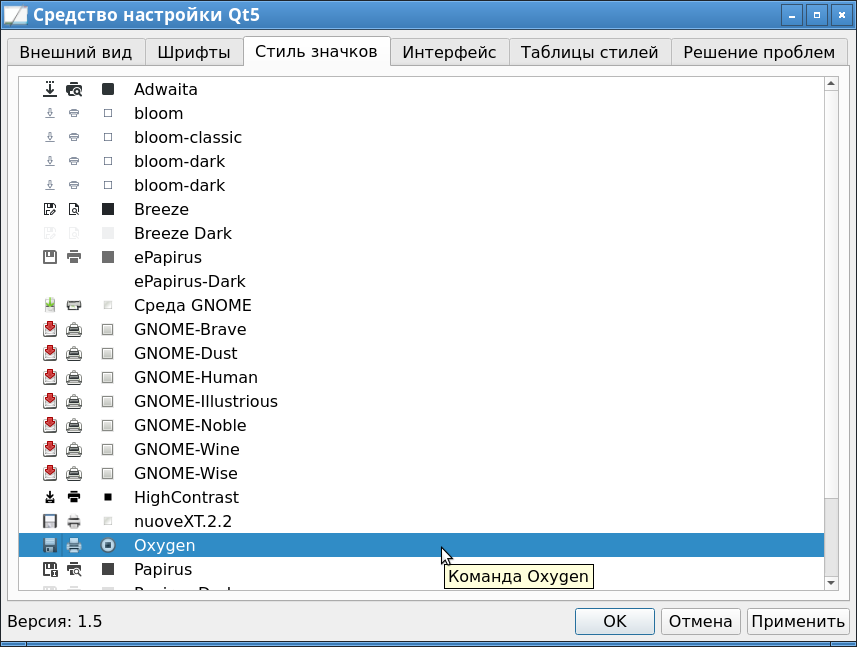
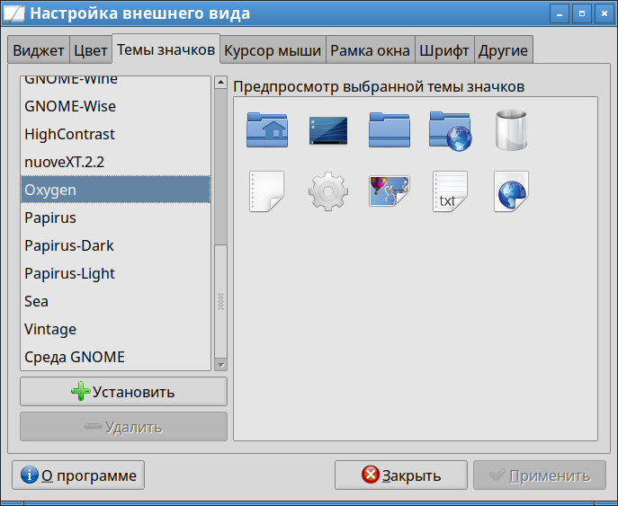

Начиная с Debian 11, были приняты изменения, которые разломали отображение иконок в KDE-программах. Это видно, например, при использовании класической темы Oxygen. И проблема встречается как в KDE, так и в LXDE.
Проблема появилась в 2022 году, а решение я смог найти только в 2025 году. Вот что обсуждалось ранее на Linux.Org.Ru:
Нет иконок в стабильном Debian 11 - KolourPaint, Kwrite и другие
Как видно, решения не было, и три года приходилось работать без иконок. Наконец, я нашел время и разобрался как вернуть иконки. Это было нелегко.
Итак, проблема возникает из-за того, что даже в 2025 году исходный код многих KDE-утилит не приведен к новым реалиям и требованиям. Например, имеется стандарт от freedesktop.org на наименование иконок:
Icon Naming Specification
https://specifications.freedesktop.org/icon-naming-spec/latest/
И в нем написано буквально следующее:
The dash “-” character is used to separate levels of specificity in icon names, for all contexts other than MimeTypes. For instance, we use “input-mouse” as the generic item for all mouse devices, and we use “input-mouse-usb” for a USB mouse device. However, if the more specific item does not exist in the current theme, and does exist in a parent theme, the generic icon from the current theme is preferred, in order to keep consistent style.
В общем, в именах используются "уровни специфичности", и они должны разделяться символом тире "-". А в более старых спецификациях для этого использовался символ подчеркивания "_".
Как оказалось из рассматривания исходников, в Kolourpaint происходит обращение к иконкам со старым принципом именования:
"tool_free_form_selection"
"tool_rect_selection"
"tool_elliptical_selection"
"tool_text"
"tool_line"
"tool_pen"
"tool_eraser"
"tool_brush"
"tool_flood_fill"
"tool_color_picker"
"tool_color_eraser"
"tool_spraycan"
"tool_rounded_rectangle"
"tool_rectangle"
"tool_polygon"
"tool_ellipse"
"tool_polyline"
"tool_curve"
"tool_zoom"
И такие иконки теперь просто не находятся системой. Все пляски с попыткой устанвки пакетов с иконками ни к чему не приводили. Хотя оказалось, что png-картинки с именами, начинающимися на tool_* все-таки есть в системе по следующим путям:
/usr/share/icons/oxygen/base/22x22/actions
/usr/share/kolourpaint/icons/hicolor/48x48/actions
И эти файлы принадлежат пакетам oxygen-icon-theme и kolourpaint. Но они упорно не хотели отображаться.
Решение оказалось в том, что надо установить пакет:
apt-get install qt5ct
После чего надо запустить утилиту qt5ct от того пользователя, под каким идет работа в DE. В ней надо перейти во вкладку "Стиль значков" и выбрать тему Oxygen, после чего надо нажать "Применить".

Так же надо проверить, что эта же тема стоит в LXDE меню "Параметры" -> "Настройки внешнего вида", вкладка "Темы значков".
